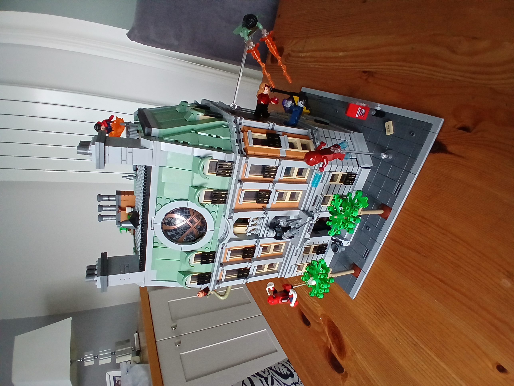
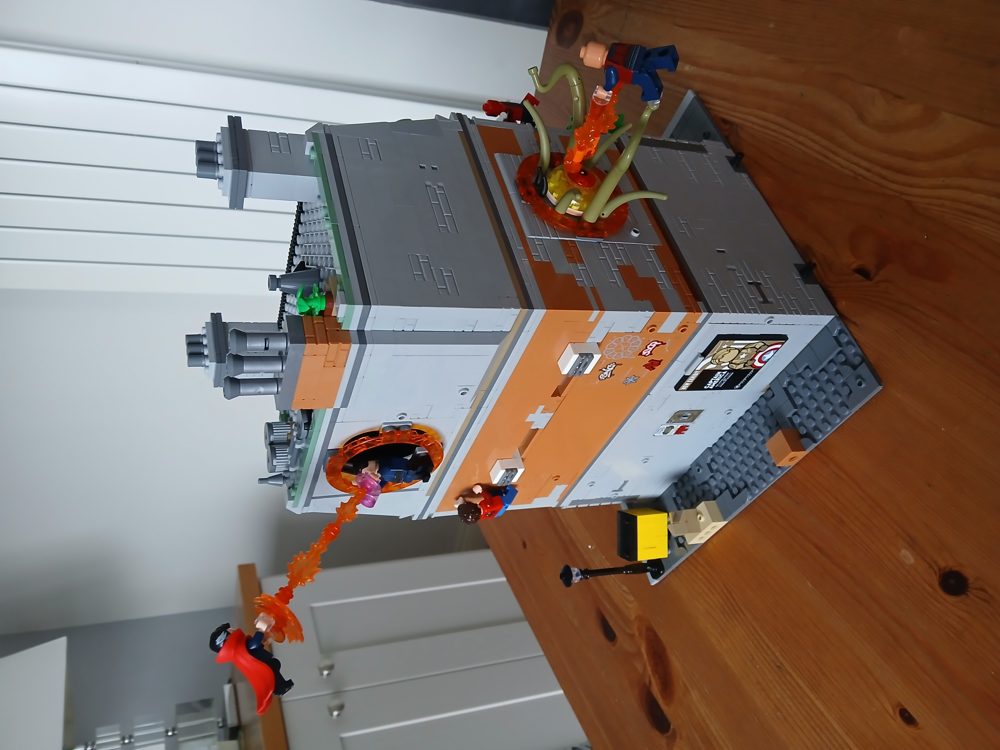
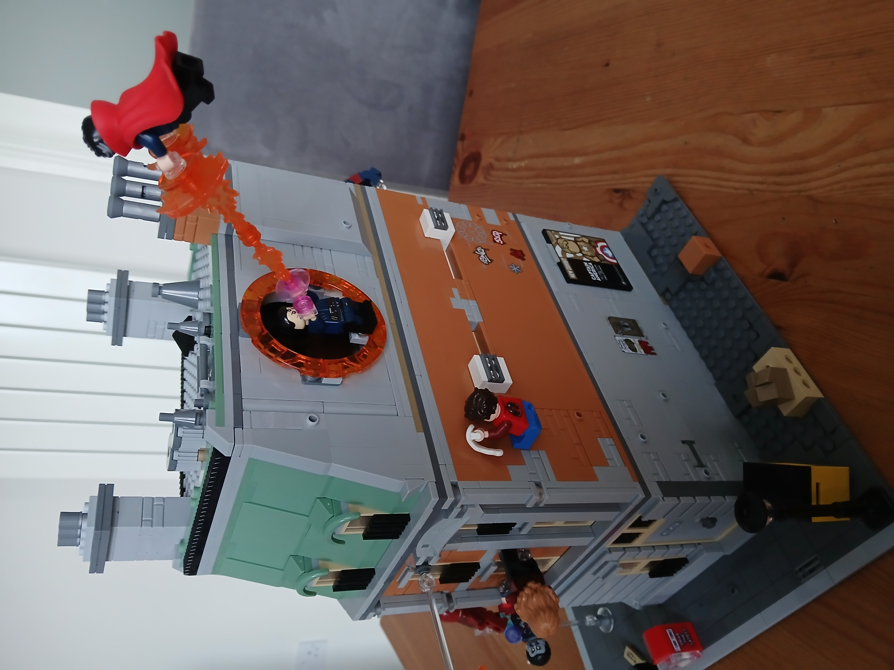

Sanctum Sanctoram
The house was created by writer Stan Lee and artist Steve Ditko. The name "Sanctum Sanctorum" is a Latin phrase
which means "Holy of Holies" and refers to the most sacred room of the Tabernacle in the Hebrew Bible. The
building has a number of features including the Orb of Agamotto, the Cloak of Levitation, and the Eye of
Agamotto.
Doctor Strange uses the house as a base for his mystical activities and it is protected from both physical and
mystical threats by a number of spells, wards, and enchantments. The building has been destroyed and rebuilt on
a number of occasions and has been the setting for a number of storylines in the comics.
The Sanctum Sanctorum has appeared in a number of media adaptations including animated television series, video
games, and the Marvel Cinematic Universe. The building has also been the setting for a number of novels and
comic book spin-offs.
Doctor Strange is a fictional superhero appearing in American comic books published by Marvel Comics. Created by
artist Steve Ditko and writer Stan Lee, the character first appeared in Strange Tales #110 (July 1963). Doctor
Strange serves as the Sorcerer Supreme, the primary protector of Earth against magical and mystical threats.
In 2012, Doctor Strange was ranked 33rd in IGN's list of "The Top 50 Avengers". A Marvel Studios live-action film
adaptation starring Benedict Cumberbatch in the title role was released in 2016, with a sequel, Doctor Strange
in the Multiverse of Madness, set for release in 2022.
Doctor Strange has appeared in a number of media adaptations including animated television series, video games,
and the Marvel Cinematic Universe. The character has also been the subject of a number of novels and comic book
spin-offs.

Sanctum Sanctorum is a fictional building appearing in American comic books published by Marvel Comics and is the
residence of Doctor Strange. The building first appeared in Strange Tales #110 (July 1963) and is located at
177A Bleecker Street in New York City's Greenwich Village neighborhood, a reference to the address of an
apartment once shared by writers Roy Thomas and Gary Friedrich.

